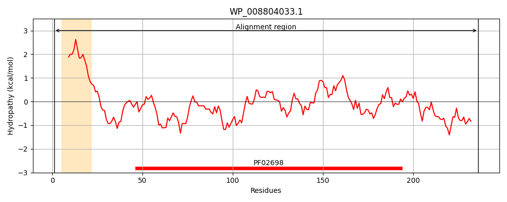
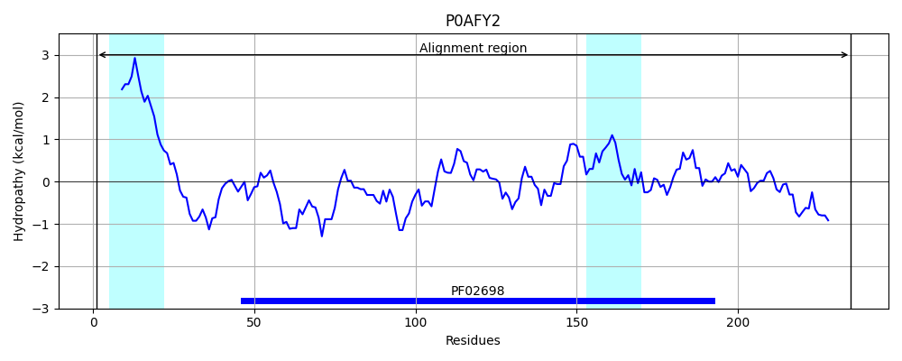
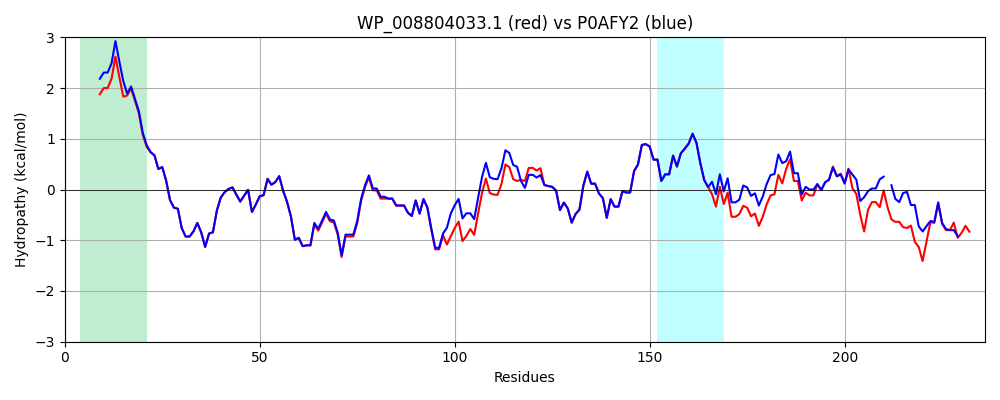

Hit Accession: P0AFY2
Hit TCID: 9.B.114.1.1
Hit Description: gnl|BL_ORD_ID|8844 gnl|TC-DB|P0AFY2|9.B.114.1.1 Protein sanA OS=Escherichia coli (strain K12) GN=sanA PE=4 SV=1
Mach Len: 236
e:0.000000
Query TMS Count : 1
Hit TMS Count: 2
TMS-Overlap Score: 0.900000
Predicted Substrates:CHEBI:9931;vancomycin
BLAST Alignment:
Score: 1145 , Bit scores: 445 bits, E-value: 2.8e-161, Alignment length: 236, Percentage identity: 93
Query: 1 MLKRVFYSLLVLLGLLLLTVLGLDRWMSWKTAPYIYDELQDLPYRQVGVVLGTAKYYRTGVINQYYRYRIQGALNAYNSGKVNYLLLSGDNALQSYNEPMTMRRDLIKGGVDPADIVLDYAGFRTLDSIVRTRKVFDTNDFIIITQRFHCERALFIALHMGIQAQCYAVPSPKDMWSVRLREFGARFGALADLYIFKREPRFLGPLIPIPAQQHDVPDDAQSYPAVTPEQLLELQK 236
MLKRVF SLLVL+GLLLLTVLGLDRWMSWKTAPYIYDELQDLPYRQVGVVLGTAKYYRTGVINQYYRYRIQGA+NAYNSGKVNYLLLSGDNALQSYNEPMTMR+DLI GVDP+DIVLDYAGFRTLDSIVRTRKVFDTNDFIIITQRFHCERALFIALHMGIQAQCYAVPSPKDM SVR+REF ARFGALADLYIFKREPRFLGPL+PIPA H VP+DAQ YPAVTPEQLLELQK
Sbjct: 1 MLKRVFLSLLVLIGLLLLTVLGLDRWMSWKTAPYIYDELQDLPYRQVGVVLGTAKYYRTGVINQYYRYRIQGAINAYNSGKVNYLLLSGDNALQSYNEPMTMRKDLIAAGVDPSDIVLDYAGFRTLDSIVRTRKVFDTNDFIIITQRFHCERALFIALHMGIQAQCYAVPSPKDMLSVRIREFAARFGALADLYIFKREPRFLGPLVPIPA-MHQVPEDAQGYPAVTPEQLLELQK 235 | Protein Hydropathy Plots: |
|---|
|  |  |
Pairwise Alignment-Hydropathy Plot:
|
|---|
|  |